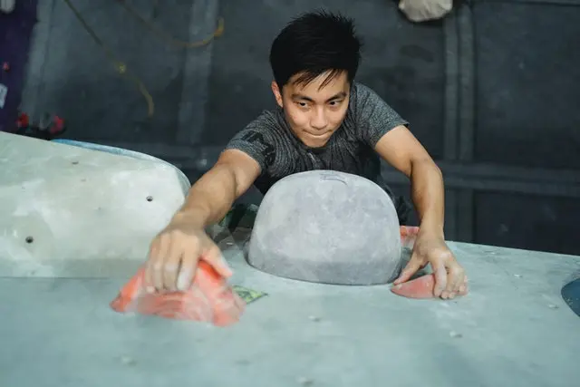

Jak zbudować siłę palców
długoterminowo i bezpiecznie?

Progresja budowania siły palców powinna wyglądać następująco:
Trening Siłowy → Trening maksymalnej siły → Trening specyficzny
Jest to przykładowa struktura planu którą możesz wykorzystać w swoim treningu natomiast trzeba pamiętać o tym żeby popatrzeć na swoją historię treningową w ciągu ostatnich 6 miesięcy i porównać ją do tego planu w celu uniknięcia kontuzji. Uproszczając jeżeli trenowałeś w ciągu tygodnia 5 godzin to postaraj się zbliżyć do tego czasu, potem możesz powoli zwiększać objętość treningu lub intensywność.
Pierwsza faza skupia się bardziej na adaptacjach strukturalnych.
- Hipertrofia - Włókna mięśniowe zwiększają swoją wielkość
- Hiperplasia - Zwiększona liczba włókien mięśniowych
- Zmiany strukturalne tkanki łącznej i więzadeł
Następnie trening siły maksymalnej skupi się bardziej na adaptacjach neurologicznych.
- Zwiększona szybkość włączania neuronów ruchowych do włókien mięśniowych, wiąże się to z szybszym wzrostem początkowej siły
- Mniejsze zahamowania mięśnia
- Redukuje połączenie z mięśniami antagonistycznymi
Ostania faza to zwiększenie szybkości w tym znaczeniu będzie to RFD
- Szybkość rozwoju siły (RFD) jest zwykle mierzona jako maksymalna siła w czasie 100 ms
- Szybkość skracania typu mięśnia w końcu uderza w ścianę, przez co jest ograniczana przez kinetykę enzymu. Oznacza to, że aby wyrazić większą moc, należy zwiększyć maksymalną siłę podstawową.
Jak to wygląda w praktyce?
Trening skupiony na hipertrofii możemy wykonać poprzez dłuższe zwisy ,przykładem mogą być 3 zwisy 30s z 4 minutami przerwy pomiędzy lub poprzez prace z sztangą robiąc tzw "Finger Curl".
Przykładem treningu siły maksymalnej mogą być zwisy 5-10 sekundowe z ok. 85-97% naszego maksimum ,oczywiście z długimi przerwami ,kluczowy jest odpoczynek który pozwoli włączyć wszystkie włókna mięśniowa przy ćwiczeniu.
Najbardziej znanym przykładem treningu specyficznego i zwiększenia RFD czyli siły kontaktowej w przypadku palców jest kampus, możemy uzyskać podobne adaptacje wisząc na bardzo małych krawądkach co dodatkowo przyczyni się do przyzwyczajenie się do małych chwytów ,czasem jest to limitujący czynnik dla wspinaczy